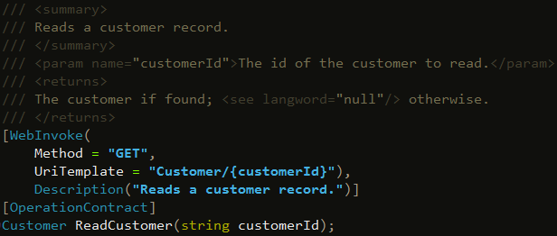
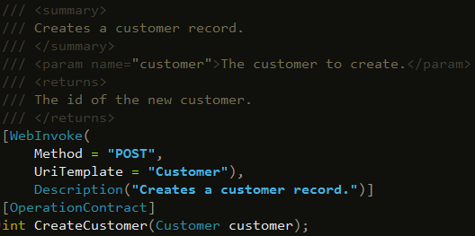
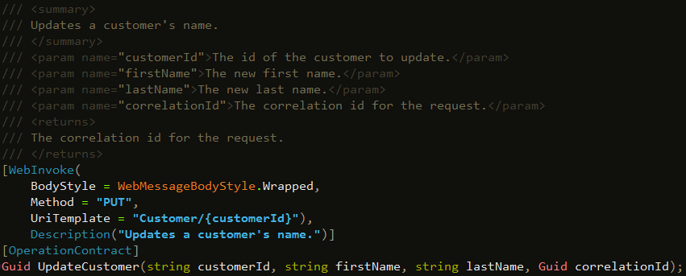

In WCF, a REST interface is implemented using the WebInvoke and OperationContract attributes.
The WebInvoke attribute specifies how the REST operation should appear within the service interface.
BodyStyle = WebMessageBodyStyle.Wrapped is used when either the request or response contain multiple root level parameters (typically on PUT, POST, DELETE). With simple GETs this is not necessary.
[WebInvoke(
BodyStyle = BODY_STYLE (optional)
Method = "GET | PUT | POST | DELETE"
UriTemplate = "OPERATION/PATHVARS | OPERATION?QUERYSTRING" )
Description("Description of operation here.")]
Analogous to a CRUD Read operation, GET uses the query-string and URI path for parameter transmission.
Analogous to a CRUD Create operation, POST uses only the request body for parameter transmission.

Analogous to a CRUD Delete operation, DELETE uses both the query-string/URI path as well as the request body for parameter transmission.
Note how the customerId is passed as part of the UriTemplate, but the correlationId is not.
Similar to a DELETE, PUT uses both the query-string/URI path and the request body for parameter transmission.
